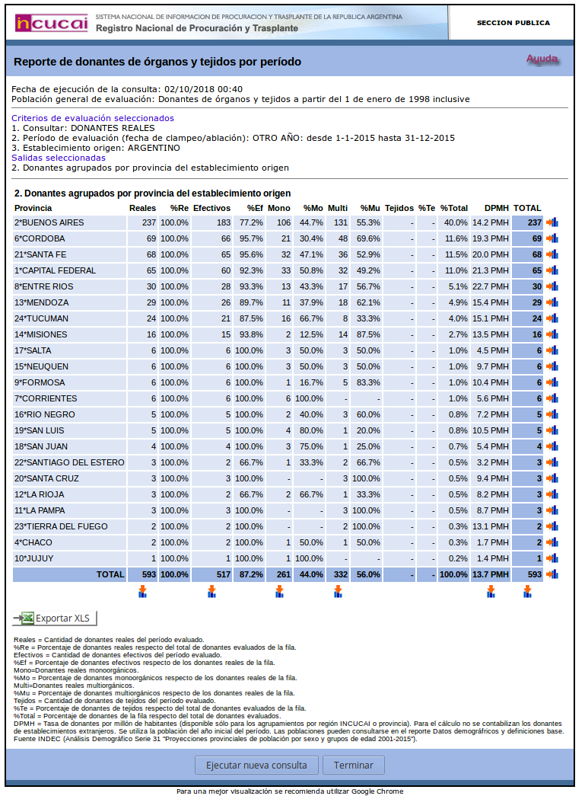
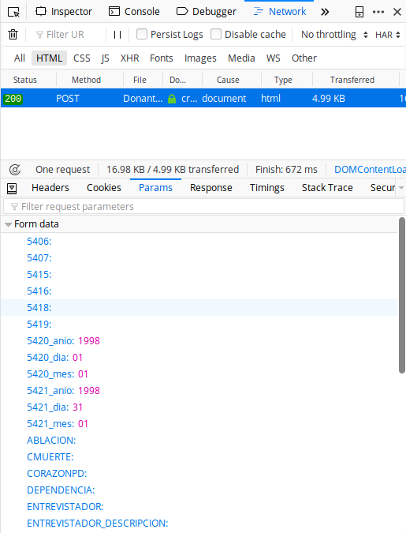
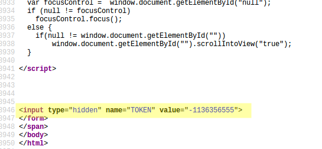
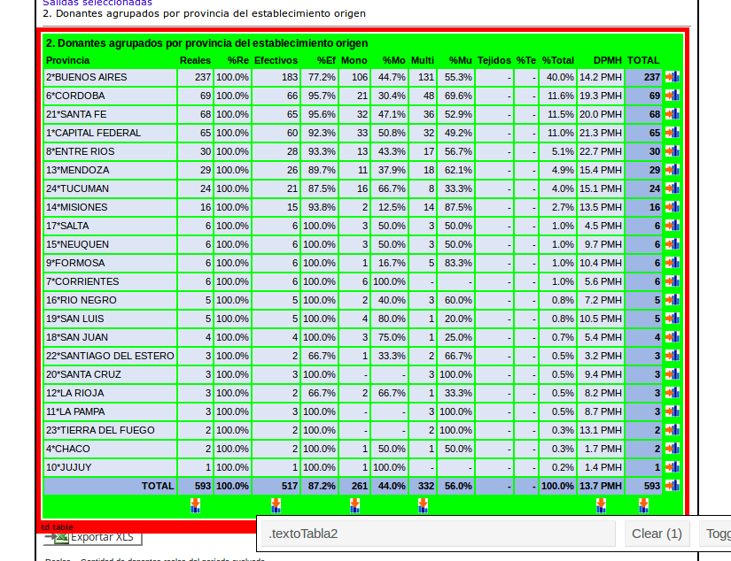
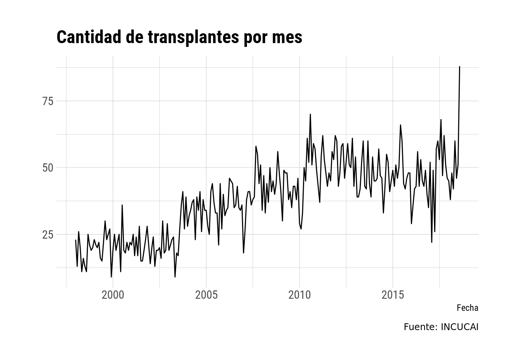

Leyendo información de INCUCAI
El otro día el diario Clarín sacó una nota que afirmaba que el pasado agosto se había dado el récord histórico de transplantes de órganos y se lo adjudicaba a la “Ley Justina”, que establece que todos somos donantes presuntos a menos que se declare lo contrario en vida. Dado que esta ley se aprobó el mes anterior y todavía no está reglamentada, es poco probable que este récord se deba a la ley en vez de a la enorme campaña asociada. En cualquier caso, la nota me despertó curiosidad. ¿Cómo evolucionó la donación de órganos en Argentina?
Como toda buena nota periodística, el artículo de Clarín sólo tira datos puntuales sin mostrar una linea de tiempo o poner los datos en perspectiva, así que tuve que ir a la fuente. El INCUCAI (Instituto Nacional Central Único Coordinador de Ablación e Implante) tiene un sistema de acceso a datos llamado CRESI (Central de Reportes y Estadísticas del SINTRA (Sistema Nacional de Información de Procuración y Transplante de la República Argentina)) que es relativamente bueno por lo transparente, pero complicado para leer programáticamente. Esto me pareció un buen ejercicio para aprender a obtener datos de sitios web.
Mi objetivo final era conseguir una serie mensual de donaciones de órganos pero el sitio sólo permite obtener los datos totales por período. Obteniendo algo como esto:

(Recién luego de todo esto me di cuenta que en otra parte se pueden ver los datos mensuales por año, lo que facilita un poco las cosas. Moraleja: ¡analizar bien la página antes de empezar a escribir código!)
Como las consultas se hacen de forma dinámica (lo cual implicaba que no es tan fácil como ir a un url en particular y listo) usé las herramientas de desarrollo de Firefox (apretando F12) y me fijé qué pasaba en la solapa Network

Así se puede ver que lo que hace es un POST (uno de los “verbos” del html) con una serie de parámetros entre los que está la fecha de inicio y final del período que busco y un número de “token”, que es el identificador único de mi sesión y que tengo que usar para acceder a los datos.
Ok, ¿cómo obtener ese número de forma programática? Luego de dar MUCHAS vueltas me fijé en el código fuente de la página de inicio del CRESI (click derecho -> View page source) y me encontré con que el token estaba ahí!

Excelente, entonces lo único que hay que hacer es navegar a esa página, leer el código fuente y extraer el ese valor. La función get_token() hace eso.
library(dplyr)
##
## Attaching package: 'dplyr'
## The following objects are masked from 'package:stats':
##
## filter, lag
## The following objects are masked from 'package:base':
##
## intersect, setdiff, setequal, union
library(httr)
library(xml2)
get_token <- function() {
fuente <- POST("https://cresi.incucai.gov.ar/IniciarCresiFromSintra.do",
add_headers(Conection = "keep-alive")) %>%
read_html()
token <- xml_attrs(xml_child(xml_child(xml_child(xml_child(fuente, 3), 1), 1), 3))
return(token[3])
}
(token <- get_token())
## value
## "1118404157"
Ahora con ese token, tengo que hacer dos POST; el primero define el tipo de búsqueda y el segundo la forma de agrupación de los datos. Como primer paso busco los datos para el mes de enero de 2000.
primer_paso <- POST("https://cresi.incucai.gov.ar/reporte/resumenestadistico/DonantePaso2.do",
query = list(`5406` = "",
`5407` = "",
`5415` = "",
`5416` = "",
`5418` = "",
`5419` = "",
`5420_anio` = 2000,
`5420_dia` = 01,
`5420_mes` = 01,
`5421_anio` = 2000,
`5421_dia` = 31,
`5421_mes` = 01,
ABLACION = "",
CMUERTE = "",
CORAZONPD = "",
DEPENDENCIA = "",
ENTREVISTADOR = "",
ENTREVISTADOR_DESCRIPCION = "",
ESTABLECIMIENTO = "",
ESTABLECIMIENTO_DESCRIPCION = "",
ESTABLECIMIENTO_ORIGEN = 1,
ESTABLECIMIENTO_ORIGEN_DESCRIPCION = "ARGENTINO",
FPROFESIONAL = "",
MMUERTE = "",
OPCIONES_AVANZADAS = "false",
ORIGENPD = "",
OTRO_ANIO = "",
PERIODO = 5,
PERIODO_DESCRIPCION = "ESPECIFICAR",
SERVICIO = "",
SPD = 4,
SPD_DESCRIPCION = "DONANTES+REALES",
TIPO_DONANTE = "",
TIPOEST = "",
TOKEN = token))
segundo_paso <- POST("https://cresi.incucai.gov.ar/reporte/resumenestadistico/EjecutarConsultaDonante.do",
query = list(`2` = "checked",
TOKEN = token))
La información está en lo que devuelve segundo_paso. El texto de la página se lee usando read_html().
(datos <- xml2::read_html(segundo_paso))
## {xml_document}
## <html>
## [1] <head>\n<meta http-equiv="Content-Type" content="text/html; charset= ...
## [2] <script language="JavaScript" type="text/JavaScript"> \r\n\r\nfuncti ...
## [3] <body onload="">\r\n<span class="notranslate"> \r\n<form action="Can ...
La cuestión es ahora extraer la tabla que quiero. Para eso está la magia del Selector Gadget. Es una herramienta que permite crear reglas para filtrar elementos de una página web a partir de ejemplos positivos y negativos. En este caso, quiero leer toda la tabla.

(Intenté filtros para eliminar el encabezado, pero no funcionaban bien y decidí que era más fácil eliminarlo en R)
La parte que importa es ese “.textoTabla2”. Ahora uso el excelente paquete rvest para filtrar ese “nodo” y luego convertirlo en un data.frame
tabla <- datos %>%
rvest::html_nodes(".textoTabla2") %>%
rvest::html_table(fill = TRUE)
head(tabla[[1]][-1, ])
## X1 X2 X3 X4 X5 X6 X7 X8
## 2 Provincia Reales %Re Efectivos %Ef Mono %Mo Multi
## 3 2*BUENOS AIRES 8 100.0% 7 87.5% - - 8
## 4 1*CAPITAL FEDERAL 5 100.0% 3 60.0% 3 60.0% 2
## 5 6*CORDOBA 2 100.0% 2 100.0% 1 50.0% 1
## 6 21*SANTA FE 1 100.0% 1 100.0% 1 100.0% -
## 7 5*CHUBUT 1 100.0% 1 100.0% - - 1
## X9 X10 X11 X12 X13 X14 X15
## 2 %Mu Tejidos %Te %Total DPMH TOTAL NA
## 3 100.0% - - 42.1% 0.6 PMH 8 NA
## 4 40.0% - - 26.3% 1.7 PMH 5 NA
## 5 50.0% - - 10.5% 0.6 PMH 2 NA
## 6 - - - 5.3% 0.3 PMH 1 NA
## 7 100.0% - - 5.3% 2.4 PMH 1 NA
¡Y ya tengo lo que necesito! 🎉. Sólo hay que hacer un poco de limpieza.
Lo que falta ahora es hacer todo esto por cada mes de cada año. Para eso hay que encapsular todo en una función. Como parte de eso voy a tener en cuenta un pequeño detalle y usar el paquete memoise para guardar en caché el resultado de la función y no hacer dos veces el mismo request al servidor. Esto está bueno por so uno corre varias veces el código.
donaciones_por_provincia_ <- function(fecha, verbose = FALSE) {
library(rvest)
library(httr)
library(lubridate)
desde <- fecha
hasta <- fecha
day(hasta) <- days_in_month(desde)
anio_0 <- year(desde)
mes_0 <- month(desde)
dia_0 <- day(desde)
anio_f <- year(hasta)
mes_f <- month(hasta)
dia_f <- day(hasta)
if (isTRUE(verbose)) {
cat(paste0("Leyendo mes: ", anio_0, "-", mes_0), "\r")
}
token <- get_token()
# Scrapp web
primer_paso <- POST("https://cresi.incucai.gov.ar/reporte/resumenestadistico/DonantePaso2.do",
query = list(`5406` = "",
`5407` = "",
`5415` = "",
`5416` = "",
`5418` = "",
`5419` = "",
`5420_anio` = anio_0,
`5420_dia` = dia_0,
`5420_mes` = mes_0,
`5421_anio` = anio_f,
`5421_dia` = dia_f,
`5421_mes` = mes_0,
ABLACION = "",
CMUERTE = "",
CORAZONPD = "",
DEPENDENCIA = "",
ENTREVISTADOR = "",
ENTREVISTADOR_DESCRIPCION = "",
ESTABLECIMIENTO = "",
ESTABLECIMIENTO_DESCRIPCION = "",
ESTABLECIMIENTO_ORIGEN = 1,
FPROFESIONAL = "",
MMUERTE = "",
OPCIONES_AVANZADAS = "false",
ORIGENPD = "",
OTRO_ANIO = "",
PERIODO = 5,
PERIODO_DESCRIPCION = "ESPECIFICAR",
SERVICIO = "",
SPD = 4,
TIPO_DONANTE = "",
TIPOEST = "",
TOKEN = token))
segundo_paso <- POST("https://cresi.incucai.gov.ar/reporte/resumenestadistico/EjecutarConsultaDonante.do",
query = list(`2` = "checked",
TOKEN = token))
table <- read_html(segundo_paso) %>%
html_nodes(".textoTabla2") %>%
html_table(fill = TRUE) %>%
.[[1]] %>%
.[-1, ]
colnames(table) <- table[1, ]
# Limpieza de columnas y filas inválidas
table <- table[-1, ]
table <- table[-nrow(table), ]
table <- table[-nrow(table), ]
table <- table[, -ncol(table)]
# Elimino porcentajes
porcentajes <- stringi::stri_detect(colnames(table), fixed = "%")
table <- table[, !porcentajes]
# Limpio algunos datos
table$Provincia <- stringi::stri_replace(table$Provincia, "",
regex = "\\d*\\*")
table$DPMH <- stringi::stri_replace(table$DPMH, "",
fixed = " PMH")
# Paso todo a numérico y los NA son ceros
table[, -1] <- suppressWarnings(lapply(table[, -1], as.numeric))
table[, -1] <- lapply(table[, -1], function(x) {
x[is.na(x)] <- 0
x })
table
}
Antes de hacer nada, voy a probar si funciona
donaciones_por_provincia_(as.Date("2018-01-05"))
##
## Attaching package: 'lubridate'
## The following object is masked from 'package:base':
##
## date
## Provincia Reales Efectivos Mono Multi Tejidos DPMH TOTAL
## 3 BUENOS AIRES 9 8 6 3 0 0.5 9
## 4 SANTA FE 7 7 2 5 0 2.0 7
## 5 TUCUMAN 6 6 3 3 0 3.6 6
## 6 CORDOBA 5 5 1 4 0 1.4 5
## 7 CAPITAL FEDERAL 4 4 2 2 0 1.3 4
## 8 MENDOZA 2 1 2 0 0 1.0 2
## 9 CHACO 1 1 0 1 0 0.8 1
## 10 CORRIENTES 1 1 1 0 0 0.9 1
## 11 ENTRE RIOS 1 1 1 0 0 0.7 1
## 12 SALTA 1 1 1 0 0 0.7 1
¡Bien! Todo lo anterior involucró una cantidad inimaginable de prueba y error y el resultado no es el código más robusto ni correcto. No sólo no tiene ninguna forma de informar sobre errores, sino que en el camino no me fijé si el “robots.txt” permite hacer este tipo de scrapping y no le puse un “sleep” para limitar los pedidos. Todo esto se puede hacer fácilmente con el paquete polite. Pero bueno; si funciona, funciona. 😤
Para terminar, guardo la versión con caché
donaciones_por_provincia <- memoise::memoise(donaciones_por_provincia_)
Con esto ya estoy listo para bajar todos los datos. Que Jenny Bryan me perdone por no usar purrr, pero todavía estoy acostumbrado a lapply.
# Vector con fechas desde enero de 1998 hasta agosto de 2018 de a un mes
fechas <- seq.Date(ymd("1998-01-01"), ymd("2018-08-01"), by = "1 month")
# Para cada fecha, bajo las donaciones por provincia, les pongo nombre
# a los elementos de la lista y luego los combino por filas.
donaciones <- lapply(fechas, donaciones_por_provincia, verbose = TRUE) %>%
setNames(fechas) %>%
data.table::rbindlist(idcol = "fecha")
donaciones$fecha <- as.Date(donaciones$fecha)
Esta parte del código tarda mucho y acá está la gracia del memoise. Podemos cancelar el proceso en cualquier momento y al volver a iniciar sólo tienen que descargar los meses que no corrieron.
No puedo terminar el post sin al menos la visualización de los datos que catalizaron todo esto. ¿Cómo varió la cantidad de transplantes con el tiempo?
library(data.table)
##
## Attaching package: 'data.table'
## The following objects are masked from 'package:lubridate':
##
## hour, isoweek, mday, minute, month, quarter, second, wday,
## week, yday, year
## The following objects are masked from 'package:dplyr':
##
## between, first, last
library(ggplot2)
donaciones[, .(total = sum(TOTAL)), by = fecha] %>%
ggplot(aes(fecha, total)) +
geom_line() +
labs(x = "Fecha", y = "",
title = "Cantidad de transplantes por mes",
caption = "Fuente: INCUCAI") +
hrbrthemes::theme_ipsum_rc()

Ahí lo tienen. Agosto de este año fue un mes anómalo, con muchos más transplantes que meses anteriores. Esperemos que marque el quiebre de la tendencia a la baja que viene desde 2010.
Resumen
Con este ejercicio uno puede aprender:
Usar “verbos” de html para enviar información a un servidor y obtener una respuesta
Leer esa respueta y seleccionar sólo los nodos con los datos relevantes
Guardar todo en una función y usar
memoisepara guardar los resultados en caché.